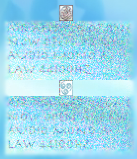
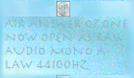

Solution: The Last Databender
Answer: CLEAR
Written by Colin Lu
The puzzle consists of a bitmap image of Avatar: The Last Airbender protagonist Aang, with various distorted components. There are several different parts to the puzzle, but they are all linked by being essentially about combining the information given in some way, as well as being loosely linked to the elements of Avatar: The Last Airbender. After each step of the puzzle, an instruction is given as to how to "databend" the data to get to next part.
Image
For the first part of the puzzle, the top and bottom sections essentially just look like noise, visually, but the section in the middle, while distorted, doesn't completely look like noise. In fact, in the bottom left of each distorted section, some words can be made out, such as LAW. However, it can be observed that the noise around the word LAW (and indeed throughout the sections) is different. This, along with the fact that they are all the same size, motivates the idea of combining the sections somehow.
There are several somewhat plausible ways of combining the noisy images - multiplying the pixel values, averaging the pixel values, XORing the pixel values. Solvers can use trial and error here among these possibilities, but the three distorted "air" element symbols can be looked at closely to see that averaging pixels produces the ideal completed element.
In an image editor, this can be done by overlaying the layers and using transparency. Solvers can either average all six distorted components, or average the three "pairs" around each of the non-air element symbols, which cleans up the noise partially, and then average the two components thus produced (this process is shown in the images below). For this part, the element boxes can be used to help line things up exactly. Doing this, or some other transformation similar enough to averaging, gives the now clear text AIR ANSWER OZONE NOW OPEN AS RAW AUDIO MONO A-LAW 44100HZ. This gives us an "answer" which we’ll save for later, and an instruction for the next step.


Audio
Following the instruction in an audio editing program such as Audacity, we can hear various sounds similar to flowing water at the start of the audio (these water clips are taken from the opening sequence of Avatar: The Last Airbender), as well as some very faint speech at some points within the noisy sections after the water sounds.
In the same vein as the first part of the puzzle, we will attempt to overlay the water sounds to cancel out the noise. However, one will notice that the water sounds are somewhat different from each other: while one is played as normal, one is backwards, and the other two are played at twice and four times normal speed. By slowing down and reversing these other clips, we can recover four clips in which the water component plays at normal speed.
By lining up these four clips using the water component (there is a section added to the water to make it easier to do this, although it's also doable from the natural audio), most of the noise cancels out, and the speech after the water sounds is now understandable, and says: WATER ANSWER IS RIVER, NOW EXPORT FROM 45 SECONDS TO END AND UNRAR.
Zip files
We now follow this new instruction: we extract the audio from 45 seconds into the track until the end (naturally, exporting in the same way we originally read it, A-law). We can then open this file, which is a RAR archive, and UNRAR (ie. extract) the contents. Among the contents is a readme file telling us to ignore the text files for now, so we look at the contained ZIP archives. Within these files, there is no content other than a series of folders with single-letter names.
Extracting these ZIP archives, each can be thought of as a string of letters (possibly reversed). Perhaps more in theme with "Earth", the collection of zip files can also be thought of as a "forest" of tree graphs.
Again thinking of a way to combine the data, there is fact a unique way to orient and order the strings, such that each string ends with the same letter that the next string begins with. Alternatively, this can be thought of as linking the graphs given by the ZIP files, but only where letters coincide, and maintaining the tree structure. Either way, reading the letters in order gives: EARTH ANSWER WEEDS NOW USE FILES DIVISIBLE BY THREE.
Text files and extraction
Looking through the given text files, there are 10 files which have filenames divisible by 3. Like all of the text files, these are single lines of 90 characters, all of which are the various “line” characters: |\_/. Once again we combine the given data: in this case, we order the 10 lines such that they spell out the final piece of text in ASCII art (incidentally in a slightly modified version of FIGlet’s ASCII art font called “Avatar”). This tells us FIRE ANSWER BARGE NOW COMBINE MOD 26 (it's also possible to get the lines in reverse, NOW COMBINE MOD 26 FIRE ANSWER BARGE).
This final instruction tells us to combine the four answers we’ve found up until this point treating the characters in each position as numbers, summing, and taking the values modulo 26. There is perhaps one slight ambiguity, in whether to treat A as having value 0 or 1, but setting A=0 seems to make more sense so that the whole alphabet is given consecutive values 0 to 25 in order. Adding the sub-answers we’ve found so far, OZONE, RIVER, WEEDS, and BARGE, as instructed, gives the answer. At the end of your databending journey, the answer is now CLEAR.
Author’s Notes
I participated in the Ultraviolet Puzzle Challenge earlier this year, and I really enjoyed the variety of somewhat technical puzzles. This inspired me to write an epic, somewhat technical puzzle of my own. My original idea was to have several steps, each databending the original image in a different way, and a final "aha" in which you apply all of the databending actions in sequence to produce the answer, but I wasn't able to construct this version of the puzzle.
I aimed to write this puzzle in a way that would walk teams through the crazy databending steps, gently introducing them to the craziness of modern file formats, while not actually requiring any such knowledge to solve the puzzle. This turned out to be challenging, because many "cool" steps I wanted to include required some degree of technical skill that solvers would likely need to learn while solving the puzzle. And while I wanted solvers to perhaps learn something about file formats and image and audio editing while solving the puzzle, I didn't want a lack of technical skills to be a big barrier to approaching the puzzle.
One example of this was in the audio component of the puzzle: if I just added noise to the audio files, and then sped some of them up, it turns out that simply slowing down the slowed components and overlaying the files doesn't work to cancel the noise, because speeding a file up and then slowing it down is a lossy action that disrupts the noise pattern. To solve that version of the puzzle, solvers would need to speed all of the files up, sync the noise up, and then slow down the result in order to listen to the message. I thought that this would be a cool concept about audio to "teach" solvers through the puzzle, but on the other hand many solvers might not figure it out, and would just get frustrated or feel like they were doing the wrong thing entirely.
I quickly thought of the "Avatar" theming for the "bending" pun. I tried to think of subpuzzles that would work somewhat thematically - the image uses the last Airbender, and has the answer OZONE, the audio uses the water sound to sync and has the answer RIVER, and the zip files can be thought of as "tree" graphs with the answer WEEDS. I couldn't work much of a fire connection into the last part, but as mentioned above, it does use a font called Avatar, and the Fire Nation spends most of its time in the TV series sailing around on barges! Moreover, each part involves combining different types of information. It was quite difficult to design the puzzle around all of these thematic considerations, so I was quite happy with what I managed to come up with in the end.